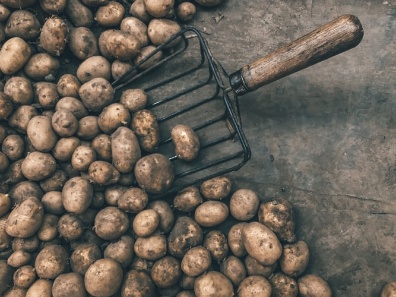

Most Eco-Friendly Foods
Eco-friendly foods are those that are kind to Mother Earth. They are foods that do not pollute waterways with agricultural chemicals, hormones, pesticides and fertilisers which affect oxygen levels in water and all marine wildlife. They are also not foods that come from confined livestock which cause major air pollution.
This means that eco-friendly foods are those that fit a vegan diet. Seasonal foods that are grown locally. If you want the eco-friendliest foods, choose certified organic foods that are free from synthetic fertilisers, pesticides and bioengineering. These foods can be found at any of your local farmers’ markets. Here are some of the foods you can start including in your diet.

Garden peas
Peas are an eco-friendly alternative to soybeans because they make their own nitrogen, giving back more to the soil than they take out, which means there is no need for additional fertilisers, yet the soil is rich with nutrients after harvest. Pea plants thrive in cool conditions, growing well in regions where there is less water waste associated with hot temperatures.
Beans
Beans are the best source of vegetable protein, important for a sustainable lifestyle. Beans can be dried to have an extended shelf life which also means less waste. Choosing beans as the main protein instead of meat makes a positive and huge environmental impact.
Lentils
Lentils are considered the most “climate-friendly” protein. Even when you combine the carbon footprint created by the production of lentils and post-production emissions from processing, transport, and retail, the level of CO2 for every kilogramme is 0.9 kg. Its nearest animal protein competitor is chicken at 6.9 kg, the lowest emitting animal protein there is.
Broccoli
Broccoli produces compounds that act as completely natural pest defences are totally natural. This means farmers can grow broccoli without the need for pesticides. The compounds in broccoli that fight off bugs are also being researched for their ability to keep some human cancers from developing.
Onions
Foods with an extreme flavour profile are usually eco-friendly foods since whatever it is that makes them bitter or tangy have a defensive purpose, which means less interference is required from external chemicals. Onions have an odour that comes from chemicals that contain Sulphur, the element that makes you cry when cutting into the bulb. Bugs like Sulphur even less than humans, so pests are less of a problem
Potatoes
Potatoes require only a moderate amount of water and fertilizer, and they can ward off some insects and disease, though if your area is prone to disease, such as the Colorado beetle, they will need intensive pesticides, which do not make them an eco-friendly food. Potatoes are easy to grow, and the crop yield is high. Potatoes also use water efficiently, consuming about one-eighth (12.4 per cent) of the water needed to produce the same volume of rice. Stored well, potatoes can last a long time, which reduces the amount of wastage.
Apples
Apples are also good at conserving water and do not require much fertiliser. Local, seasonal and organic apples are one of the most versatile eco-friendly foods that can be eaten raw, cooked and in a vast array of sweet and savoury recipes.
Pears
Similar to apples in their requirement for nutrients and water, pears reach optimal ripeness after being picked and placed into storage. This means that transport does not have to be as speedy and inefficient as that for apples, which saves on the carbon footprint. Pears are popular on local farms and should be easy to find. Looking for more eco-friendly products?